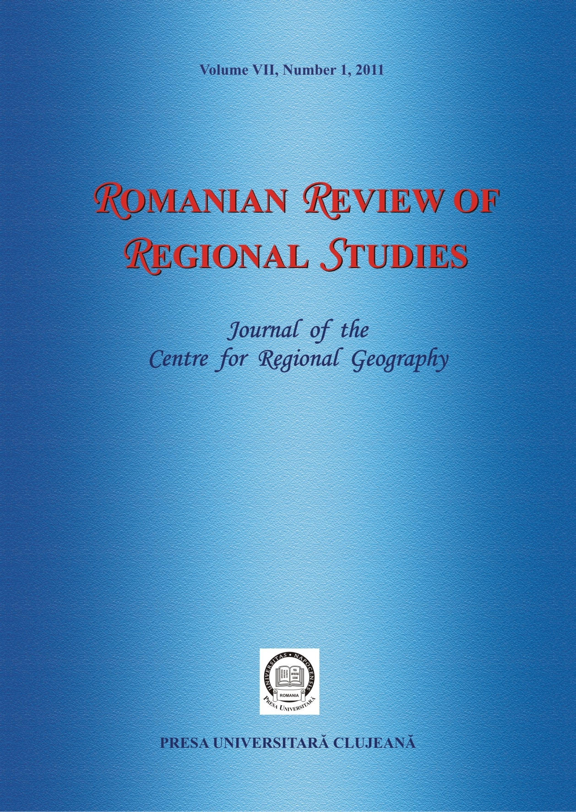

Volume VII, Number 1, 2011
Regional Development from the Perspective of Polycentricism
LÁSZLÓ BORBÉLY
Pages 3-18
[Full text]
ABSTRACT - The study proposes an integrated approach of polycentricism based on assessing the issues of the Romanian urban and rural spaces. The first step was the definition of a few evaluation indices of the polycentricism level within the rural and urban areas and the establishment of a general indicator aggregating the first ones. The analysis made for each development region is focused, on the one hand, on the specific component elements for defining the polycentricism level and, on the other hand, on the possibility of covering each used indicator with official statistical data. These indicators may be used in the development of the new Regional Development Plan for the upcoming period of 2014-2020, based on the Improvement Territorial Regional Plans and Metropolitan and Regional Development Strategies.
Keywords: regional development, polycentricism, regional disparities, general regional polycentric index
Fighting Spatial Disparities, Enhancing Territorial Competitiveness: European Union Regional Policy Paradoxes
GILLES ARDINAT
Pages 19-24
[Full text]
ABSTRACT – Competitiveness strategy agreed in Lisbon in 2000 was seen as a radical change in the economic and social policy of the European Union. However, this strategy, meant to be a response to globalization, mass unemployment, and deindustrialization, has disappointing results. This failure may be partly explained by the structural funds dispersion between the traditional objective of territorial solidarity, the Lisbon imperative of competitiveness and after 2001, sustainable development.
Keywords: competitiveness, European Union, Lisbon Strategy, regional policy, spatial cohesion
Is Territorial Cohesion Necessary for the Sustainable Development of the European Regions?
RADU C. BARNA
Pages 25-34
[Full text]
ABSTRACT - The Regional policy of the EU is pursuing the harmonious development of the European territory; this is a necessary condition for the creation of an environment that is favourable to the convergence of the Union’s policies. But, for these policies to converge, it is necessary that there are common objectives and these can arise only from the existence of common needs. It is obvious that a very different level of development leads to different needs for people and territories and therefore, to the pursuit of different objectives. The introduction of the territorial cohesion as an objective of the European Union through the Treaty of Lisbon has concluded many years of debate over the essence and future of the EU. But is this a prerequisite for the sustainable development of the EU regions? To answer this question, in this paper we will try to show the importance of the territorial cohesion in the EU. In order to do this, we will place the evolution of this concept in parallel with that of development and also with the process of enlargement and of deepening of the EU. We will thus try to determine the influence that territorial cohesion has on regions and on the European construction so that in the end we should be able to explain the effects that it has on their sustainable development.
Keywords: regional development, territorial cohesion, European strategies
Are There Cultural Regions in Hungary?
PÉTER BENKŐ
Pages 35-42
[Full text]
ABSTRACT - Drawing up cultural macro-regions in Hungary is hardly possible as not even two of the highly developed mezo-regions are contacting, not speaking about forming a bloc; they rather constitute a mosaic on the country map. Those on medium cultural level make up two groups, while, though the ones with a low standard are mostly found along the Danube as a single bloc, they are isolated by Pest county, statistically grouped in one region with them, with a genuine cultural level far exceeding the low cluster. Consequently, it is only justified to speak about cultural regions in the sense that, on the whole, Dunántúl is on a higher standard than the eastern half of the country.
Keywords: cultural development, education levels, cinema attendance levels, theatre attendance levels, cultural macro-regions
Demographic Vulnerability of Rural Settlements in the Someş Plateau
VICTOR SOROCOVSCHI, CSABA HORVATH, ŞTEFAN BILAŞCO
Pages 43-52
[Full text]
ABSTRACT – The different geographical characteristics allowed the differentiation of multiple subunits in the Someş Plateau. From the 219 identified rural settlements, 16% are commune centers and the remaining 84% are related villages. In the assessment of the demographic vulnerability of rural settlements, there are several criteria of which the number of inhabitants is one of the most important. Certainly, determining the appropriate interval of each vulnerability degree has a subjective character depending on the characteristics of the settlements. In the Someş Plateau, four degrees of demographic vulnerability were differenced according to the number of inhabitants: low (over 1000 inhabitants), medium (501-1000 inhabitants), high (between 101 and 500 inhabitants) and extreme (below 100 inhabitants). A common feature in all geographic subdivisions is that the share of settlements with high vulnerability is the largest.
Keywords: rural areas, demographic vulnerability, Someş Plateau
Examining Neighbourhood Effects in Regional Inequalities of Hungary: a GIS-Based Approach from Topological Relations to Neighbourhood Heterogeneity
ÁKOS JAKOBI
Pages 53-62
[Full text]
ABSTRACT – There is an increasing number of popular works, which explain regional inequalities of the economy and the society with spatial location. Techniques like spatial autocorrelation or spatial clustering became basic methods of mainstream examinations. These methods put geographical location, or more precisely the neighbourhood effects, in the focus of the researches. The typical research questions originate from Waldo Tobler’s classical law of geography, namely that “everything is related to everything else, but closer things are more closely related”. According to the research assumptions, the regions that are neighbours in geographical space are usually similar to each other also in socio-economic sense. For the examination of neighbourhood effects, GIS (Geographical Information Systems) may serve as a quite useful tool. By the application of GIS programmes, the topological relation of the examined objects can be straightforwardly defined. Additionally results of examinations with different methodological approach can be also easily compared. This paper, on the one hand, introduces both different methods of defining neighbourhood relations and the application of GIS in determining contiguity. On the other hand, it reflects how varied or same consequences can be drawn by the application of these techniques. In the analysis of neighbourhood effects, the most deterministic factors of the Hungarian regional inequalities are examined: the level of personal income and the unemployment rate. The examination points out where stable social and regional clusters were formed in Hungary, in the mirror of the different methodological approaches.
Keywords: methodology, GIS, topological relations, neighbourhood, spatial autocorrelation, Hungary
Premises for Agricultural Development in the Zăbala River Basin
ALEXANDRU MUREŞAN, GABRIELA ADINA LAZĂR, OLIVIA-IOANA MUREŞAN
Pages 63-70
[Full text]
ABSTRACT – The most important right bank tributary of the Putna River in the Land of Vrancea, the Zăbala River, springs from the main orographic node of the Vrancea Mountains and crosses the mountain area to create, at the contact between the mountains and the Sub-Carpathian region, a depression area which represented the habitational and economic support for the formation of the Land of Vrancea. One of the main economic activities developed within the Zăbala River basin is agriculture, a traditional occupation and at the same time a possible basis for a sustainable development. In the current paper, we have made an analysis of the main parameters which influence the practice of agriculture, as well as of the possibilities for the development of other agricultural activities depending on the characteristics of the available land fund, on the technological facilities and on the existing human resource by taking into consideration the structure and characteristics of the two current branches of the primary sector of activity.
Keywords: agriculture, pastoral activities, Zăbala river basin
Baia Mare Mining Area. Effects of the Policy of Disadvantaged Areas
GABRIELA-ALINA MUREŞAN, RALUCA-MIHAELA ROGOJAN
Pages 71-82
[Full text]
ABSTRACT – The policy of the disadvantaged areas was a component of the regional development policy in Romania between 1998 and 2010. It aimed to delineate those areas that underwent serious economic and social issues that were mainly generated by industrial restructuring in order to take specific measures to revive them. Baia Mare mining area is one of the 38 disadvantaged areas that were identified in Romania. The present article aims to emphasize the results of such a policy within Baia Mare mining area, the way in which the status of disadvantaged area had effects on the economic development of the city of Baia Mare and on the other localities included. Therefore, the companies that invested in the area once it was declared a “disadvantaged area” were analyzed, along with the new jobs, the facilities for companies, the total value of investments and the way these influenced (in a positive or negative manner) the decrease in the unemployment rate and the economic revival through activities from new economic domains. The conclusion is that a high number of companies had investments during its existence as a disadvantaged area, yet the effects they had on the economic development are evident particularly in the city of Baia Mare. The poor quality of the transport infrastructure and of the business infrastructure restricts the economic potential of the other localities that are part of the area, therefore they registered few investments.
Keywords: disadvantaged area, economic agents, investor certificate, unemployment, investments, economic revival
Impact of Industrial Restructuring on Population Dynamics in the City of Călăraşi
ALINA MARILENA HERCIOG, GABRIEL RĂDULESCU
Pages 83-90
[Full text]
ABSTRACT - The present paper focuses on a geographical study on industrial restructuring of the Călăraşi city, in terms of economic and human potential. To develop this working paper, the physical-geographical aspects of the region were taken into account, mainly economic, social and demographic analyzing the main features of each component. Industrial restructuring phenomenon has been studied in the literature of recent years, especially in the context of a global orientation direction towards tertiary sectors, and regional crises. In this sense, by the process of industrial restructuring in the city of Călăraşi one can understand a decrease in occupancy rates in industry as a percentage of total employees. It is therefore possible to argue that the decrease in the number of employees in industry can simply reflect the share of the industry sector in GDP. Furthermore, the paper analyzes the state of industry in Călăraşi before and after 1989. The industrialization before 1989 had a strong impact on population, in the idea that the evolution of population had a significant boost due to the permanent migration of a significant part of rural population to urban areas. The industry of Călăraşi after 1989 did not register a positive trend, the Romanian revolution signifying the "beginning of the end" for most of the powerful industrial units of the city. However, there is an excellent infrastructure for industrial development in Călăraşi. The analysis showed that Călăraşi is currently a centre polarizing all fields of activity, its attractiveness exceeding its area of direct influence. Nevertheless, due to its location close to the border with Bulgaria, the city of Călăraşi can be characterized as a multi-functional contact centre - "the gate of Romania to the South-East." It is hard to predict, in the current conditions, the future of the city of Călăraşi in terms of economic development.
Keywords: industrial restructuring, industrialization, urbanization, migration, Călăraşi
Forecast the Impact of Bucharest – Braşov Highway on the Economic and Functional Structure of Human Settlements in Ilfov County
CĂTĂLINA CÂRSTEA, FLORENTINA ION, PETRONELA NOVĂCESCU
Pages 91-106
[Full text]
ABSTRACT - One of the most publicized issues concerning the infrastructure of Romania is the Bucharest-Braşov highway. The long-awaited project aims to streamline the traffic between the Capital and the central part of the country, representing the central area of the Pan - European Road Corridor IV. The length of the highway on the territory of Ilfov County is 31 km, representing 17% of the total length of Bucharest- Braşov highway. The start of the highway will have strong effects on economic structure and on the way the Bucharest Metropolitan Area will work. We can expect an increase in the disparities between the settlements of Ilfov County. This pattern is also observable on the Bucharest-Ploieşti corridor where, in recent years, much of the Ilfov county's economic activities have migrated to the north, especially along that corridor. Besides economic migration, intense residential migration followed the Bucharest – Ploieşti corridor, residents of the Bucharest itself moving out to the north of Ilfov County. Probably, the future Bucharest – Braşov highway will lead to an increased suburbanization and periurbanization, this in turn giving way to the crowding of the area by businesses eager to have access to the highway. This project will likely increase the gap between north and south of Ilfov County. In addition to changes that may occur at the county level, changes will also have an impact on the localities themselves since the areas located near the highway will have an economic and demographic growth rate superior to more remote areas. In this sense, we conducted a comparative analysis between eight settlements of Ilfov county crossed by the Bucharest-Braşov highway in order to assess the impact. This analysis was based on the information obtained from site and statistical indicators that were processed to obtain a clear picture of the situation in the examined territory.
Keywords: regional development, urban planning, infill development, national highway
Can Rural Tourism Boost Green Livelihoods? Empirical Evidences from Maramureş
FRANCESCA REGOLI, MATTEO VITTUARI, ANDREA SEGRÈ
Pages 107-122
[Full text]
Abstract - The European rural policy is shifting from the concept of multifunctionality to the one of public good with a growing attention to environmental concerns and green livelihoods. In Maramureş, Romania, this approach is only partially explored: as diversification strategy, several tourist accommodation facilities have been created by rural households, but those services are often not integrated to territorial amenities. Consequently, the rural system is still agriculturally based with a largely unexplored potential considering non-farm activities, a high migration rate, and a consistent land abandonment. The research aims to investigate how tourist initiatives can contribute to the promotion of green livelihoods through the valorization of local assets. Tourism can foster the enhancement of the territorial capital (natural, cultural social, institutional and economic ones), the preservation of public goods in the area (i.e. forests, land management) and the promotion of a more environmental oriented livelihood. A development strategy based on the recognition of the specificity embedded in the territorial capital can move the traditional heritage and local assets back to the core of the policy debate, recognizing their role in the socio-economic and environmental development of the area. Methodologically, the work is based on a cluster analysis carried out trough data collected from a range of rural guesthouses (offering tourist accommodation facilities) and focusing on the concept of public good and on the local strategies adopted to manage and valorize the territorial capital. Collected data served as main tool for the identification of the major challenges that local administration should overcome to identify an effective strategy for local development. Moreover, the cluster analysis has been anticipated by an extensive literature review conducted on the existing policy papers, reports and documents focused on the promotion of sustainable development in rural Romania.
Keywords: public goods, territorial capital, rural tourism strategies, Vişeu Valley, Maramureş
Spatial Disparities in the Educational System within the Land of Severin
CRISTIANA VÎLCEA
Pages 123-130
[Full text]
ABSTRACT – The development and the diversification of the economy in the Land of Severin, especially in the rural space, depend on the level of education, knowledge and skill. Though the improvement and the maintenance of an adequate level of basic infrastructure is an important element in the social-economic development, education and the professional formation are the “engine” for a good development. The difficulties faced by the educational system are mainly generated by the lack of material and human resources, which negatively influenced the level of education and the distribution of educational services within the two areas, urban and rural.
Education and formation are essential for the human community living in the Land of Severin, but regarding the scholar infrastructure, there are evident discrepancies between the rural and urban space: the quality of education is low, on the one hand because of the poor endowment of educational infrastructure and, on the other hand, due to the teachers’ level of experience/ skill. Another problem faced by the system of educational services is the difficulty to attract skilled personnel in rural areas.
Keywords: educational system, economic development, rural space, education units, didactic personnel
Inventory Cards for Regionally Relevant Geomorphosites
GABRIELA COCEAN
Pages 131-136
[Full text]
ABSTRACT – When analyzing inventory or evaluation cards for geomorphosites, one can notice that sometimes the elaboration of such cards is not supported by an articulated method of inventory and assessment, whereas some cards developed together with such methods do not in fact take up the criteria used in the assessment. In addition, not all methods used contain such cards. Thus, we identified the need for a new method of assessment that materializes in the development of a synthetic sheet that captures the criteria and rates noted in the evaluative process. The originality of the method emerges from de separation of the structural and functional values of geomorphosites, for which new or improved criteria and ranking are used. The restrictive attributes are also evaluated, in order to obtain a complete view upon the possibilities of conservation and exploitation of the geomorphosite. All scores obtained by a geomorphosite will be reflected in the inventory card. This card will also include general information about the landform, a brief description of the type of geomorphosite and justification for rates given in the evaluative process.
Keywords: geomorphosites, inventory card, assessment method, structural value, functional value, restrictive value
Plan4all – A European Approach to Spatial Data Used on Territorial Planning
MICHAELA DORA MIHAILESCU, GERGELY TÖRÖK
Pages 137-142
[Full text]
ABSTRACT - In order to ensure the increased efficiency of European policies and the implementation of Structural Funds in a more balanced manner in the different territories of the country, a number of eight development regions have been established in Romania, corresponding to NUTS II level. In between these regions, as well as within each of them, a major concern is the diminution of economic and social disparities. Moreover, these disparities can manifest themselves in a cross-border context, jumping the administrative boundaries of regions and even neighbouring countries. In this sense, development plans provide certain measures in order to stimulate a more balanced development of the territories, using spatial planning as the actual support in identifying factors that lead to the emergence and intensifying of regional disparities. The present paper focuses on these aspects related to spatial planning data in the context of the recent European initiatives, through the activities of the Plan4all project that is being implemented by a European consortium. Romania is partner in this project and is represented by the North-West Regional Development Agency (North-West RDA). The paper presents the achievements of the running Plan4all project until the present day, as well as the involvement and the contributions of the North-West RDA so far.
Keywords: spatial planning data, INSPIRE, Plan4all, geoportal
Book review
CRISTIAN NICOLAE BOŢAN - Ţara Moţilor. Studiu de geografie regională [The Land of the Moţi. Study of Regional Geography], Presa Universitară Clujeană, Cluj-Napoca, 2010, 527 p.
POMPEI COCEAN
Pages 143-144

ABOUT THE JOURNAL
ISSN-L: 1841-1576
Online ISSN: 2344-3707
Edited by: CENTRE FOR REGIONAL GEOGRAPHY
Published by: PRESA UNIVERSITARĂ CLUJEANĂ (CLUJ UNIVERSITY PRESS)
Frequency: Semiannual (issued in June and December)

This work is licensed under a Creative Commons Attribution 4.0 International License.